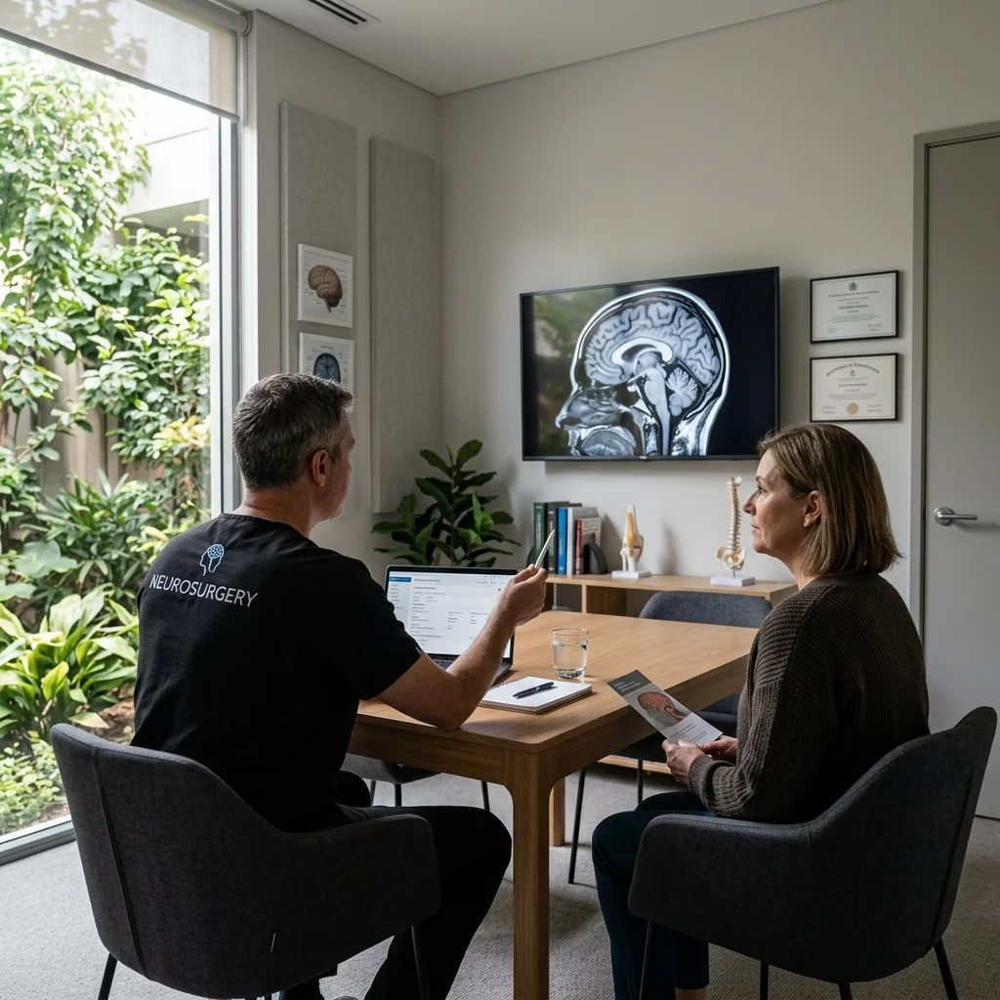
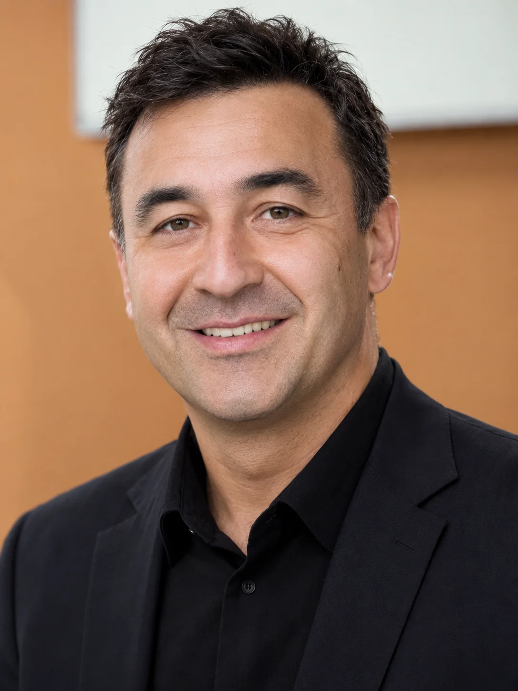

Falsafamiz va Jamoamiz
Sizning salomatligingiz uchun asosli diagnostika, individual konsultatsiya va dalillarga asoslangan davolash usullariga katta eʼtibor qaratamiz.
Tibbiyotni tushunish.
Birgalikda qaror qabul qilish.
Amaliyotimiz ixtisoslashgan neyroxirurgik diagnostikani har bir bemor uchun individual terapiya rejalashtirish bilan uygʻunlashtiradi. Asosiy maqsad qandaydir usulni imkon qadar tezroq qoʻllash emas, balki simptomlar sababini aniq aniqlash va shunga mos samarali davolash choralarini belgilashdir.
Biz markaziy va periferik asab tizimi hamda umurtqa pogʻonasi kasalliklarini davolaymiz. Bularga, xususan, umurtqaning degenerativ kasalliklari, disk churralari, spinal kanal torayishi, periferik nervlarning siqilish sindromlari va surunkali ogʻriq sindromlari kiradi.

Konservativ, intervension yoki operativ
Tashxisga qarab, dastlab operatsiyasiz davolash usullari yetarli boʻlishi mumkin. Agar jarrohlik amaliyoti zarur yoki maqsadga muvofiq boʻlsa, biz aralashuvning maqsadi, muqobil yoʻllari, xavf-xatarlari va rejalashtirilgan parvarishni batafsil tushuntiramiz. Aniq usul tashxis, anatomiya, nevrologik koʻrsatkichlar va shaxsiy omillarga bogʻliq.
Ambulator va statsionar muolajalar
Klinikamizda tegishli kichik muolajalar uchun oʻz operatsiya xonamiz mavjud. Katta hajmdagi operatsiyalar hamkor klinikalar va statsionarlarda amalga oshiriladi. Davolash joyi har bir amaliyot uchun individual tanlanadi.
Bizning jamoa

- Study of Human Medicine at the State Medical University of Irkutsk and the State Institute for Advanced Medical Training, Russia, 1992–2000
- Specialist training in Neurosurgery at Jena University Hospital and Klinikum Meiningen GmbH, 2003–2008
- Specialist in Neurosurgery, 2006
- Senior Physician in Neurosurgery, Cologne Merheim, 2009
- Chief Senior Physician in Neurosurgery, MHO Osnabrück, 2011
- Chief Physician, Mikroneurochirurgie mbH Gensingen, 2013
- Additional qualification: Special NCH Pain Therapy, 2015
- Additional qualification: Psychosomatic Therapy, 2015
- Founded own Neurosurgery Practice in Mönchengladbach, 2015
- Doctoral thesis: Comparison of minimally invasive surgical procedures for the fusion of the sacroiliac joints – 4-year results with clinical and radiological findings, 2023
Bizning jamoa
Additional languages may be available depending on location and staff availability.
Tibbiyot insonlarni, bizning amaliyotimizda esa turli madaniyatlarni ham birlashtiradi.
Bizning fidoyi va xalqaro jamoamizning bir qismiga aylaning hamda zamonaviy, samimiy va kelajakka yoʻnaltirilgan tibbiy xizmatni shakllantirishga hissa qoʻshing.
Ambulator amaliyot markazlarimiz va statsionar boʻlimimiz uchun shifokorlar, tibbiy assistentlar (MFA) va hamshiralik ishi boʻyicha mutaxassislarni taklif etamiz.
Faoliyatingizni endi boshlayapsizmi, yangi marralarni izlayapsizmi yoki professional bosqichga koʻtarilmoqchimisiz – biz oʻsish va rivojlanish uchun keng imkoniyatlar yaratamiz.
Qiziqdingizmi? Mavjud boʻsh ish oʻrinlari yoki mustaqil rezyume yuborish uchun toʻgʻridan-toʻgʻri kadrlar boʻlimimiz bilan bogʻlaning.
Birga ishlash. Birga yuksalish. Tibbiyotni birgalikda rivojlantirish.